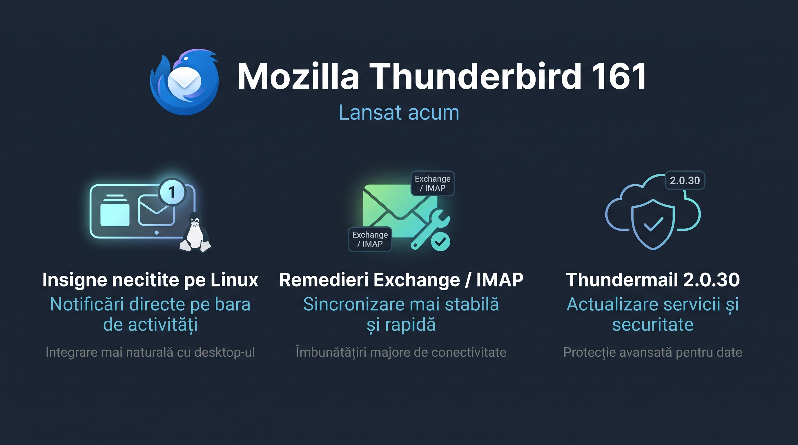

Mozilla Thunderbird 161 a fost lansat: Insigne cu mesaje necitite pe bara de activități din Linux, remedieri Exchange/IMAP și actualizare Thundermail 2.0.30

Mozilla a lansat Thunderbird 161, cea mai nouă versiune a clientului său open-source de e-mail și productivitate. Cea mai vizibilă noutate pentru utilizatorii Linux este afișarea contorului de mesaje necitite direct pe pictograma din bara de activități (taskbar), alături de remedieri importante pentru conturile Microsoft Exchange, protocoalele IMAP și compunerea mesajelor.
1. Integrare desktop Linux și remedieri pentru Exchange / IMAP
Insigne cu mesaje necitite pe Linux: Mediile desktop și barele de activități Linux compatibile afișează acum numărul de e-mailuri necitite direct pe pictograma Thunderbird, fără a mai fi necesară deschiderea ferestrei aplicației.
Corecții pentru Microsoft Exchange: Rezolvă două probleme majore:
adăugarea unui al doilea cont Exchange nu mai afișează eronat mesajele din primul cont;
descărcarea simultană a mai multor e-mailuri pentru utilizare offline nu mai duce la amestecarea sau afișarea incorectă a conținutului mesajelor.
Stabilitate IMAP: Elimină eșecurile la redirecționarea (forwarding) mesajelor din foldere care conțin spații în nume și rezolvă un bug care determina reîncărcarea continuă a panoului de citire a mesajelor.
2. Compunerea mesajelor, agende de contacte și securitate
Corecții critice la compunere și scurtături:
Remediază un bug critic în care apăsarea combinației
Ctrl+V(lipire) putea trimite accidental un e-mail;Asigură funcționarea corectă a scurtăturii
Ctrl+Enterpentru trimiterea mesajelor și navigarea fluentă de la tastatură între câmpul de subiect și corpul mesajului.
Agende de adrese și extensii Manifest V3: Îmbunătățește sincronizarea cu agendele Google și CardDAV, păstrează numerele de telefon preferate la editarea contactelor vCard și elimină încetinirile cauzate de modificările de contacte efectuate de extensiile Manifest V3.
Thundermail 2.0.30 și criptare OTR: Extensia integrată Thundermail este actualizată la versiunea 2.0.30, iar criptarea de chat Off-the-Record (OTR) este dezactivată implicit pentru profilurile care nu au folosit-o niciodată. Actualizarea include, de asemenea, rafinări ale interfeței și remedieri de securitate.
Disponibilitate: Thunderbird 161 este disponibil pentru Linux, Windows și macOS pe site-ul oficial al proiectului.